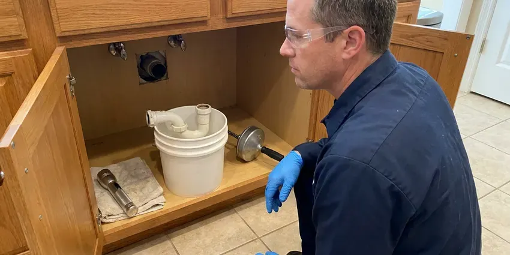

Plumbers for Frozen Pipes in Cheat Lake, WV
GJK Plumbing provides prompt and reliable service for frozen pipes throughout Cheat Lake, WV, getting your water flowing again safely.
- Preventive Measures
- Burst Pipe Repair
- Expert Diagnostic Tools
- Expert Pipe Thawing

Need Quick Frozen Pipe Repair in Cheat Lake, WV?
We thaw the line, check for cracks and leave your plumbing ready for the next freeze.
Your Local Plumbers for Frozen Pipes in Cheat Lake, WV
When you're facing frozen pipes, GJK Plumbing is your dependable partner for prompt and professional service. We focus on safely thawing and repairing pipes, ensuring your home's plumbing is restored without further complications.
Our expertise includes:
- Protective insulation and heat tape installation.
- Safe and proven pipe thawing techniques.
- Burst pipe repair in walls, attics, garages and outdoor lines

Additional Plumbing Maintenance Services in Cheat Lake, WV
Our maintenance and specialty plumbing services in Cheat Lake, WV catch small problems before they become emergencies.


Customers
Why Choose GJK Plumbing for Plumbers for Frozen Pipes in Cheat Lake, WV?
Freezing temperatures, even for a short time, can turn a minor inconvenience into a major plumbing emergency. Our team acts fast to mitigate risks and restore your water service safely.
- Crack Checks, Every thawed line is pressure tested so a hidden split does not flood the house later.
- Flame-Free Thawing, We use controlled electric and infrared heat that is safe for walls, attics and plastic pipe.
- Local Knowledge, Our plumbers are familiar with Cheat Lake's climate and common home construction, which helps us promptly pinpoint and address frozen pipe issues.
Citywide Coverage
No matter where you are located in Cheat Lake, you can count on GJK Plumbing for prompt and professional frozen pipe services. We ensure complete coverage to keep all Cheat Lake residents safe from plumbing freezes.
Experienced Team
Each GJK Plumbing technician is well trained and regularly trained on best practices for handling frozen pipes, including identifying vulnerable areas in the plumbing systems common in Cheat Lake and across West Virginia.
Safety-First Approach
We take every precaution to prevent further damage during the thawing and repair process, ensuring all work meets high safety standards and plumbing regulations. Our methods are designed to be effective without weakening the structural integrity of your pipes or home.
Trusted Certified Cheat Lake Plumbing Services Professionals
At GJK Plumbing, we take pride in providing certified plumbing services throughout Cheat Lake, WV. Backed by recognized industry credentials, our experienced plumbers combine technical skill with genuine customer care. Whether it is repair, installation, or maintenance, we follow strict safety and quality standards to deliver lasting results you can trust.
Call Us Now PHCC Plumbing Contractor Recognition
PHCC Plumbing Contractor Recognition Better Business Bureau (BBB) Accreditation
Better Business Bureau (BBB) Accreditation Angi Certified Pro
Angi Certified Pro ISO 9001 Quality Management Certification
ISO 9001 Quality Management CertificationDependable Frozen Pipe Thawing and Repair in Cheat Lake, WV
Attic and Exterior Wall Pipe Repair in Cheat Lake
Many homes run supply lines through attics or crawl spaces to reach bathrooms and kitchens, and those spaces get nearly as cold as the outside air at night. Pipes in exterior walls with thin insulation are also at risk. We repair freeze-damaged sections and add proper insulation or reroute lines into conditioned space. These changes greatly reduce the odds of a repeat freeze.

Hose Bib and Outdoor Faucet Repair in Cheat Lake, WV
Outdoor faucets freeze easily, especially with a hose left connected. A split often hides inside the wall and only shows when the faucet is turned on in spring. We replace damaged hose bibs with frost-free models from brands like Woodford and Prier that shut off water inside the warm part of the wall. Insulated covers add more protection on freezing nights.
Post-Thaw Pipe Inspection & Repair in Cheat Lake, WV
After a pipe has frozen and thawed, it is important to inspect for any hairline cracks or weaknesses that may have developed. GJK Plumbing provides thorough post-thaw inspections using pressure tests and visual checks to identify potential future leak points. If any damage is found, we perform immediate repairs to secure your plumbing system against future failures. This proactive inspection is vital for the longevity of your plumbing in Cheat Lake, WV.
Burst Pipe Repair and Restoration in Cheat Lake, WV
Unfortunately, frozen pipes can lead to burst pipes, causing significant water leaks and property damage. GJK Plumbing focuses on burst pipe repair, quickly isolating the damaged section and replacing it with durable materials such as PEX or copper. We also perform careful inspections of the surrounding areas for secondary damage and provide recommendations for remediation. Our goal is to fix the immediate problem and also ensure the long-term integrity of your plumbing system in Cheat Lake, WV.
Water Heater Line Thawing and Repair in Cheat Lake
The water lines leading to and from your water heater can also freeze, especially if located in an unconditioned space like a garage or utility closet in Cheat Lake. This can completely stop your hot water supply or damage the heater itself. Our plumbers are skilled at safely thawing these lines, inspecting for any damage to the water heater unit, and confirming proper function is restored. We handle both traditional tank and tankless water heater setups.
Emergency Burst Pipe Repair in Cheat Lake, WV
A burst pipe is a true plumbing emergency that requires prompt attention to prevent extensive water damage to your Cheat Lake, WV home. Our emergency services are available around the clock to respond to burst pipes caused by freezing. We will shut off the main water supply, locate the rupture, and perform a durable repair or replacement, often using push-fit connectors for quick fixes or soldering new sections of Type L copper for long-term solutions. We understand the urgency and move quickly.
Outdoor Faucet and Sprinkler Line Freezing in Cheat Lake, WV
Outdoor plumbing, like garden hoses connected to spigots and sprinkler systems, is usually the first to freeze in Cheat Lake, WV. We provide services to thaw these lines and repair any resulting damage, such as cracked spigots or broken sprinkler heads. We also install frost-free sillcocks and advise on correctly draining and blowing out irrigation systems before winter to prevent future issues, protecting your entire outdoor plumbing network.

Frozen Pipe Repair Cost Comparison in Cheat Lake, WV
Thawing an accessible frozen pipe usually costs $150 to $400. Repairing a burst pipe typically costs $250 to $800 for an accessible line and more when walls or ceilings must be opened. Replacing a hose bib with a frost-free model runs about $200 to $450. Prevention work like insulation and heat cable usually costs far less than repairing a single burst line and its water damage.
Plumbers for Frozen Pipes Near Me in Cheat Lake, WV
When temperatures drop overnight, a fast local response keeps a frozen pipe from becoming a flooded room. Our plumbers are stationed close to Cheat Lake and ready during cold snaps. We bring thawing machines, heaters and repair fittings on each truck.
When you search for plumbers for frozen pipes near me in Cheat Lake, you want a fast response and reliable service. GJK Plumbing is located to serve all corners of Cheat Lake, ensuring our team can get to your property quickly. We understand the urgency of frozen pipe emergencies and prioritize fast dispatch.
GJK Plumbing at a Glance
- Fully licensed plumbing team covering Cheat Lake, WV
- 24/7 emergency service with same-day scheduling
- Upfront, flat-rate pricing before work begins
- 4.8-star rated by 832+ West Virginia customers
Cheat Lake Map
Cheat Lake Information
- Population
- 9,930
- Area codes
- Local
- Service area
- Cheat Lake and communities within 40 miles
- Nearby
- Brookhaven, Morgantown, Fairmont, Bridgeport
Water lines in attics, exterior walls, garages and outdoor equipment are the first to freeze in Cheat Lake, WV, and a hard freeze can split pipes that were never protected against cold. Aging galvanized pipe narrows with rust and scale over time, causing low water pressure, leaks and discolored water.
Expert Services
Trust our professionals for reliable GJK Plumbing solutions in Cheat Lake, WV.
Our Specialized Plumbing Services in Cheat Lake, WV
At GJK Plumbing, we provide a complete range of plumbing services across Cheat Lake, WV. From leak detection to full system installations, our team ensures fast, precise, and affordable service for both residential and commercial properties. Explore our core services below:


How Our Plumbers for Frozen Pipes Process Works in Cheat Lake, WV
Our process is designed to restore water safely and keep a frozen pipe from becoming a flood.
Request a Quote
Contact GJK Plumbing right away at (681) 223-3607 when you suspect or confirm a frozen pipe. Our helpful team will gather initial details and schedule a rapid response visit to your Cheat Lake property.
On-Site Assessment
Our expert technician arrives on time, equipped with diagnostic tools to pinpoint the frozen section of your pipes. We identify the cause and extent of the freeze, and look for any existing damage.
Thaw and Repair
We safely thaw the frozen pipe using approved methods and then thoroughly inspect for leaks or bursts. Any damaged sections are repaired or replaced with durable materials to restore full function to your plumbing system.
Frequently Asked Questions About Plumbers for Frozen Pipes in Cheat Lake
Thawing an accessible frozen pipe in Cheat Lake typically costs $150 to $400. Burst pipe repairs typically run $250 to $800, with higher costs when drywall or ceilings must be opened. We give you pricing before work begins.
Many policies cover sudden water damage from a burst pipe, though coverage varies. We can provide photos and a written report of the repair. Check with your insurer about your specific policy.
To prevent future freezing in Cheat Lake, insulate exposed pipes, especially those in attics, crawl spaces, and exterior walls. Disconnect garden hoses and drain outdoor spigots. Consider dripping faucets during extreme cold, especially those on exterior walls. For long-term solutions, we can install heat cables or reroute vulnerable pipe sections.
Minor thawing and simple pipe repairs typically do not require a permit in Cheat Lake. However, if the repair involves significant re-piping, altering the main water line, or work on gas lines tied to water heaters, a plumbing permit may be necessary. Our team handles all necessary permitting for you.
GJK Plumbing stands behind our frozen pipe repairs in Cheat Lake. We offer a comprehensive warranty on both parts and labor, typically for one year, so you know the repair will hold up. We use durable materials and professional techniques to provide lasting solutions and peace of mind.
To prevent pipes from freezing in Cheat Lake, insulate all exposed pipes, especially those in unheated areas like crawl spaces, attics, and basements. Disconnect garden hoses, drain outdoor spigots, and consider keeping a small trickle of water running from faucets during extreme cold snaps. Sealing air leaks near pipes can also make a difference.
A frost-free hose bib has a long stem that shuts off water inside the warm part of the wall. Brands like Woodford and Prier make reliable models. They greatly reduce freeze damage at outdoor faucets.
You can open the faucet and carefully warm an exposed pipe with a hair dryer. Never use a torch or open flame. If the pipe is inside a wall or you cannot find the frozen section, call a plumber.
What People Are Saying About Our Plumbing Experts?

Emily R.
I called GJK Plumbing for plumbing repair, and the technician was fast, polite, and thorough. They explained the problem clearly and fixed it the same day. I will definitely hire them again. Highly recommended!
Plumbing Repair · Clarksburg, WV
James P.
Our commercial plumbing system had a leak under the sink, and GJK Plumbing handled it professionally. The plumbers arrived quickly and restored everything without disruption to our customers.
Commercial Plumbing · Clarksburg, WV
Patricia H.
We had a slab leak that two other companies could not find. GJK Plumbing located it in under an hour, explained our options, and the price matched the quote to the dollar.
Slab Leak Repair · Cheat Lake, WV
Daniel K.
A pipe burst at 11 pm and they actually answered. The plumber showed up within the hour, shut everything down, and had us back to normal the next morning. Could not ask for more.
Emergency Plumbing · Cheat Lake, WVRobert G.
The trenchless sewer replacement saved our front yard. They walked us through the camera inspection footage first so we knew exactly what we were paying for.
Sewer Line Replacement · Bridgeport, WV
Mark T.
When our office needed drain cleaning, GJK Plumbing provided quick, reliable service. The plumber arrived on time and made sure every drain flowed perfectly before leaving. Very satisfied.
Drain Cleaning · Brookhaven, WV